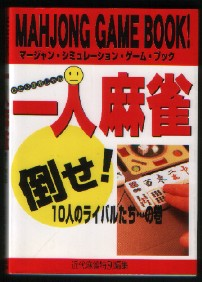

夜食を仕入れにコンビニに行った。ふと文庫本棚に目をやると、「一人麻雀」というタイトルのシュミレーション式の麻雀ゲーム本が。帯には「読めばグングン雀力アップ」と。これが読まずにおらりょうか、というのでさっそく購入した。

シュミレーション式だから、示された複数の捨て牌候補から何かを選択し、その牌に対してリンクされているページに飛ぶ。それの繰り返しで、正着を選択し続ければみごとアガれる。不適切な牌を選択してリンクページに飛ぶとゲームオーバーとなる。夜食をかきこみながら、さっそくやってみた。
ある局面、「ここで貴方は何を切りますか？」
「そりゃ＊＊だ」と思ったら、その牌が選択肢にない。
「ありゃりゃ？」というので、不本意ながら（笑）選択肢の中から１枚を選ぶ。で、リンクされたページに飛ぶと、いきなり「ゲームオーバー・元へ戻ってやり直し」だって・・・・
一口アドバイスには「手役を意識しすぎです」
別にそんな牌、最初から選びたくなかったんだけど・・・・(i。i）
ある局面、役牌のドラをポンしてイケイケムードの一上聴。
そこへ下家から立直がかかる。ふん、いちおう危険牌の本線は現物◎万の裏筋○Ｘ万か。
索子は△索・▽索と切れている。ここへ△索・▽索の筋、▲索を引く。筋は通っているが、これが生牌。しかし選択肢は▲索、◎万、Ｘ万。
Ｘ万は病牌だから、実質は▲索、◎万の２種。いくら筋でもノーテンで生牌の▲索を切ることはない。そこでおとなしく現物の◎万を切る。そしてリンクページに飛ぶと、ぎょえっ〜！そこにはゲームオーバーのでっかい文字が！。
解説にいわく。「あなたは◎万を切ったあと、△索を引きました。これで嵌▼索でテンパイしたのでＸ万を切り、満貫に放銃しました。元へ戻ってやり直し」
う〜ん、なんで嵌▼索のテンパイでＸ万を切らなきゃいけないのか、ちと釈然としない。テンパイ取らずでそのまま現物の△索ツモ切り。次に索子でメンツができるか、ＸＹ万でも引いたら、はじめて筋を頼りに▲索か★索を勝負というところだと思うが・・・・
めんどうだから正解（?）をみたら、「▲索はツモ切り。次に上家の切った▼索をチーして◎万切り。上家のＹ万で満貫ロン」
つまり生牌の▲索を引いた時点でそのまま▲索を勝負しておけば、△索を引いてもテンパイにならず、Ｘ万を打つくことはなかった」という主旨のものだった。
次に上家が切る牌がすべて分かっているなんて、さすがにすごすぎると思うが、だからどうのこうのと言うつもりはない。シュミレーションマージャン自体は非常に面白かった。この本を読み終わってつくづく思うのは別のこと。そりは、ホント、麻雀の打ち筋って人様ざま！
|